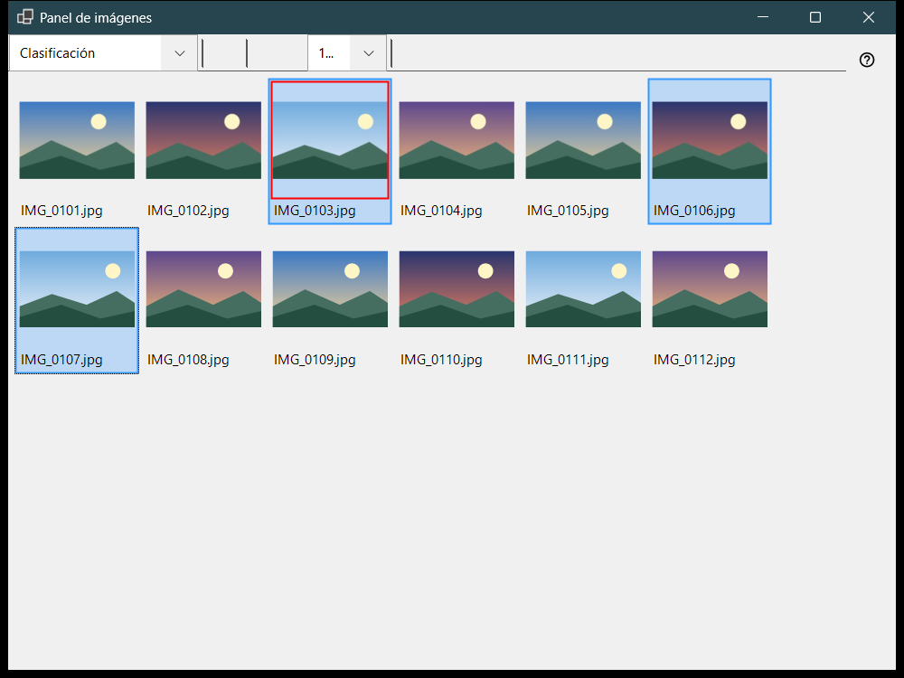
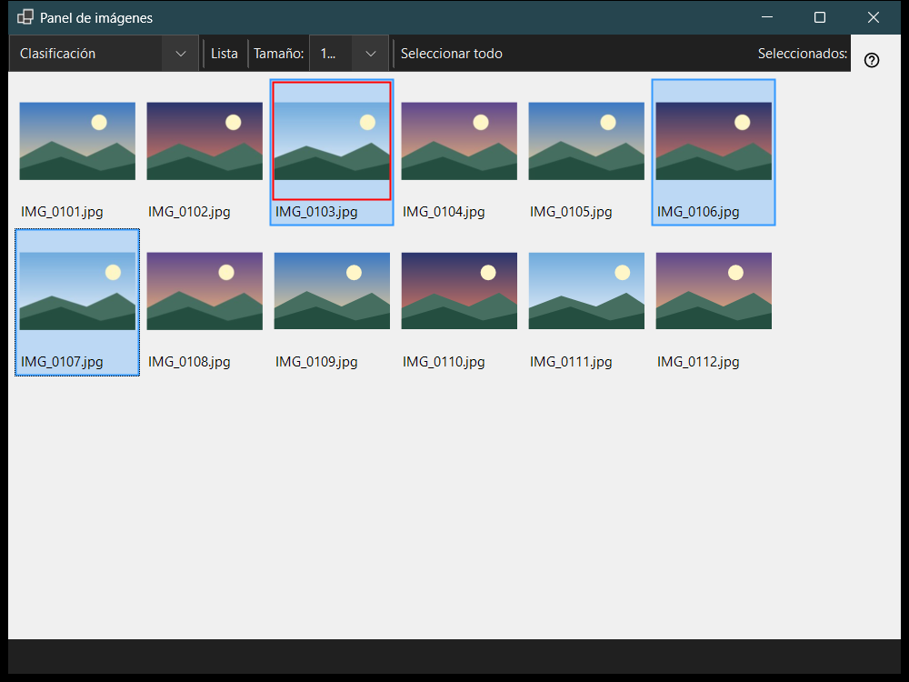

Panel de imágenes
Para qué sirve
El panel de imágenes se abre con F3 desde el visor y funciona en dos modos que se eligen en el cuadro «Modo del panel»: Clasificación, una cuadrícula de miniaturas de la carpeta actual, y Administrador de archivos, un explorador con ubicaciones, carpetas y comandos de archivo. Ver los archivos, seleccionarlos y cerrar el panel no cambian lo que muestra la ventana principal.


En este orden
- Pulse F3 en el visor.
- Elija el modo en «Modo del panel».
- Seleccione archivos: clic, Shift+clic para un intervalo, Ctrl+clic para alternar uno o arrastre un marco.
- En el modo Clasificación pulse 0-9 para mover la selección a una carpeta de destino, o Shift con un dígito de la fila superior para copiarla; Ctrl+Z deshace la última operación.
- Haga doble clic en un archivo o pulse Enter para abrirlo en la ventana principal.
- Pulse Esc para cancelar una operación en curso y de nuevo Esc para cerrar el panel.
Los elementos
Modo del panel
«Modo del panel» cambia entre Clasificación y Administrador de archivos. El modo Clasificación muestra miniaturas de la carpeta actual para mover y copiar rápidamente; el administrador de archivos explora cualquier carpeta y ofrece comandos de archivo.
Tamaño, disposición y selección
El control deslizante (Tamaño:) fija el tamaño de las miniaturas, «Mosaicos» y «Lista» cambian la disposición (Ctrl+L), y el contador de selección muestra cuántos archivos están seleccionados del total.
Selección y clasificación
El clic selecciona, Shift+clic selecciona un intervalo, Ctrl+clic alterna un archivo y arrastrar dibuja un marco de selección. Ctrl+A selecciona todo, Ctrl+Shift+A borra la selección, Ctrl+I la invierte, la barra espaciadora marca un archivo, y las flechas, Home, End, PgUp y PgDn permiten desplazarse. Los dígitos 0-9 mueven la selección a la carpeta de destino de esa tecla, Shift con un dígito de la fila superior la copia, Del la elimina y Ctrl+Z deshace la última operación.
Filtro y archivos ocultos
El filtro de contenido elige Archivos multimedia, Multimedia y documentos o Todos los archivos, y «Ocultos» muestra u oculta los archivos ocultos. «Ajustes..» abre la ventana Configuración en la página Administrador de archivos, donde se fijan el modo de visualización, el filtro, las ubicaciones y el orden recordado.
Comandos de archivo
Ctrl+C, Ctrl+X y Ctrl+V copian, cortan y pegan, F2 cambia el nombre, Ctrl+Shift+N crea una carpeta, Del y Shift+Del eliminan los elementos seleccionados y Alt+Enter muestra las propiedades. Copiar o mover entre recursos pasa por este equipo.
Crear ZIP
«Crear ZIP» empaqueta todas las carpetas y archivos seleccionados en un solo archivo comprimido. Eliminar los originales está desactivado de forma predeterminada y solo se permite después de verificar y publicar el archivo comprimido.
Extraer aquí
«Extraer aquí» actúa sobre un archivo comprimido seleccionado: las carpetas y los archivos normales se conservan, el archivo comprimido original se queda en su sitio y los programas extraídos no se ejecutan nunca. Esc cancela la operación.